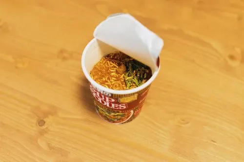
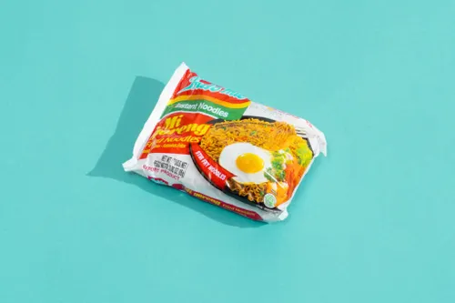
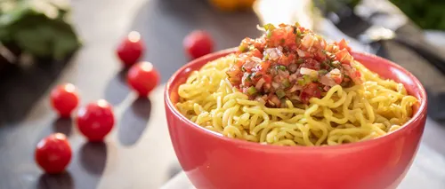
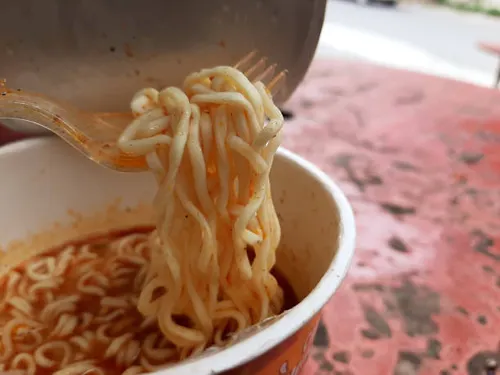
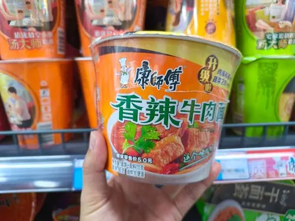
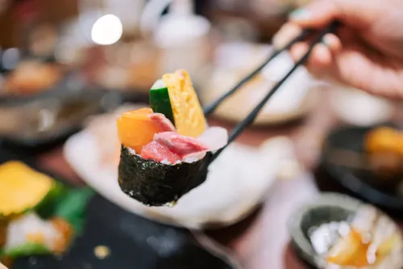
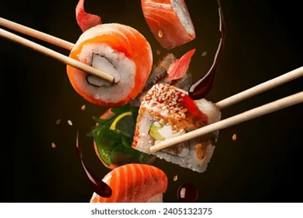
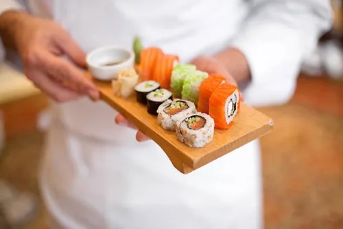

Stuff I've Eaten Till Date.
Some of the most eaten food in the whole of Asian Continent - Instant Noodles.





This is that one thing I've eaten the most in my entire life, and I still somehow love it!
Tier: S Tier
Recommended for those who love that generic hit of Indian spice and a shitton of MSG
This is the equivalent of Maggi but in Malaysia
Tier: S Tier
Recommended for anyone who wanna treat themselves to a banger at 3am with nothing but a dollar
A whole lot variety. Gotta Try 'em all :3
Tier: S Tier
Recommended for those who love to try something new every. single. day.
Now we're approaching the spicy side of noodles - Korean Noodles
Pure spice, with a hint of creaminess (in case of carbonara and cheese variants)
Tier: S Tier
Recommended for those who like to challenge (torture) themselves with spice. Must try for spice lovers but keep your appointments emopty for the next day ;)
personally I find them quite mid as compared to buldak, but that's just my personal opinion.
Tier: B Tier
Recommended for those who like soupy noodles, I still recommend that you throw away the remaining broth after eating instead of drinking that because of the sheer amount of sodium content in it.
Expensive yet the best thing to eat on a good day - Sushi



Only had it once till now, but still wanna try again. Also I don't like wasabi.
Tier: S Tier
Recommended for people who have a thing for seaweed and rice together with the stuffing/topping. Not for everyone but must try atleast once
If only a single box could define a culture... Wait, we have Bento!.
A combination of japanese dishes which work well in synergy of taste. Also it's a piece of art.
Tier: SSS Tier
Recommended for those who wanna try a full Japanese meal but like good looking food more than the taste.